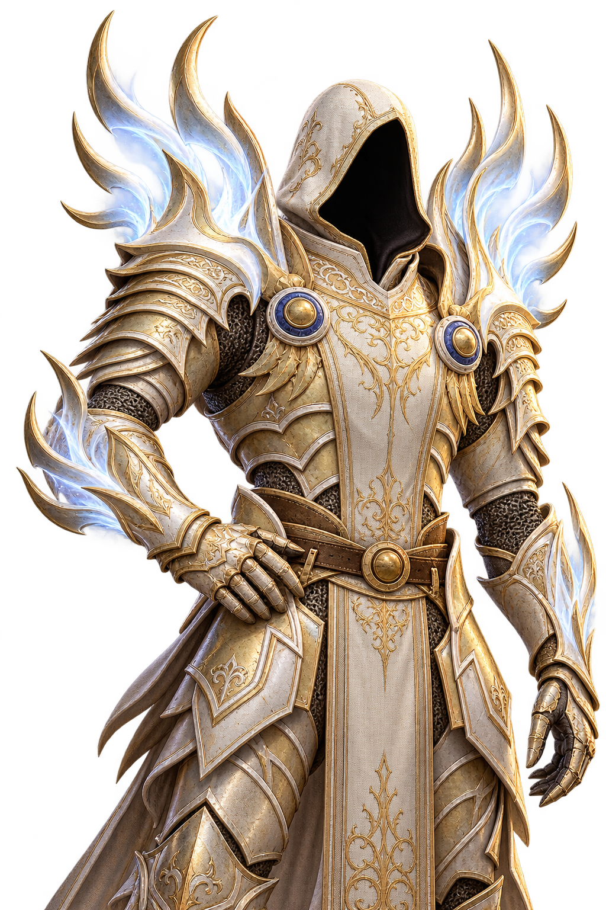

DARK ELF · 01
DOOM LIGHT
둠 경갑 · 다크엘프
은백색 헤어, 날카로운 인상.
어둠 속에서도 빛나는 존재감.
고스트와 함께하는 발헤임
다섯 가지 외형과 엄선한 편의 기능.
우리의 세계를, 우리만의 방식으로.



얼굴부터 갑옷, 망토까지.
당신의 모험에 어울리는 모습을 선택하세요.
은백색 헤어, 날카로운 인상.
어둠 속에서도 빛나는 존재감.
거친 갑주와 압도적인 실루엣.
전장의 가장 깊은 곳으로.
백골 갑옷에 새겨진 위압감.
잊히지 않을 전설의 형상.
붉은 뿔과 은백색 갈기.
금빛 갑주에 깃든 강렬한 존재감.
얼굴을 감싼 후드와 금빛 갑옷.
어깨와 팔을 따라 흐르는 빛.
기능을 살펴보고, 나에게 필요한 사용법을 확인하세요.
처음 시작부터 업데이트까지, 필요한 안내를 한곳에.
Ghost r2를 내려받아 압축을 풀고 INSTALL_GHOST_R2.cmd를 실행하세요.
런처에서 Valheim과 사용할 프로필을 선택한 뒤 통합팩을 설치하세요.
설치가 끝나면 런처의 Start modded로 게임을 실행하세요.
Ghost r2 · Windows · v1.0.5
Ghost r2가 새 통합팩을 자동으로 확인합니다. 새 버전이 보이지 않으면 런처의 버전 확인 버튼을 누르세요.
게임을 종료하고 사용 중인 프로필에서 업데이트 또는 모두 업데이트를 선택하세요.
위의 런처 준비를 마쳤는지 확인하고, 브라우저의 앱 열기 요청을 허용하세요. 설치된 Ghost r2를 직접 실행해도 됩니다.
다운로드 정보에서 통합팩 ZIP을 다시 받을 수 있습니다. 수동 설치는 런처의 Import local mod에서 해당 ZIP을 선택하세요.
두 사람의 게임 버전과 사용 중인 프로필의 통합팩 버전을 확인하세요. 외형 기능은 친구에게도 같은 통합팩이 필요합니다.